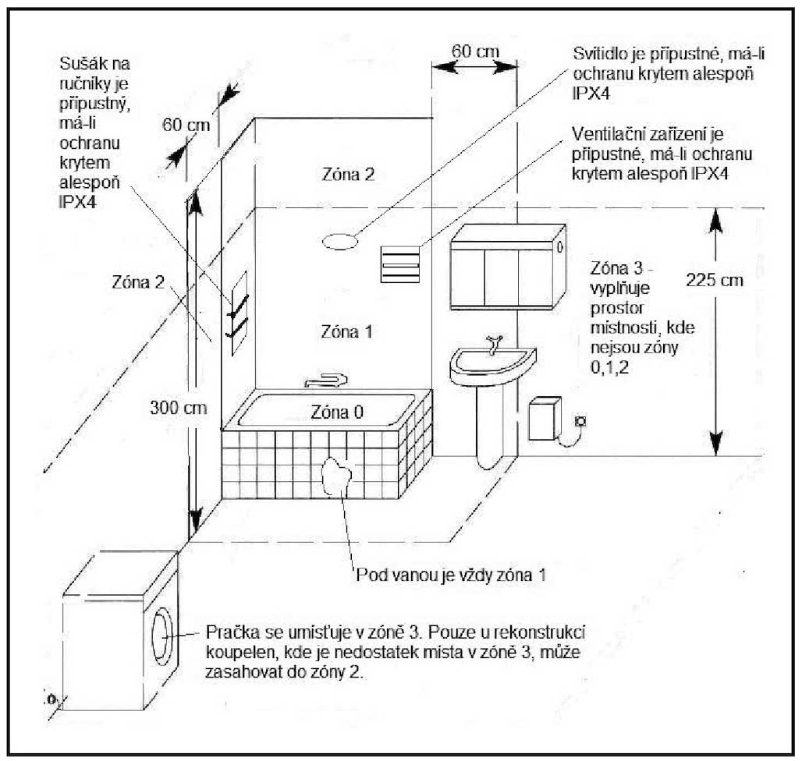
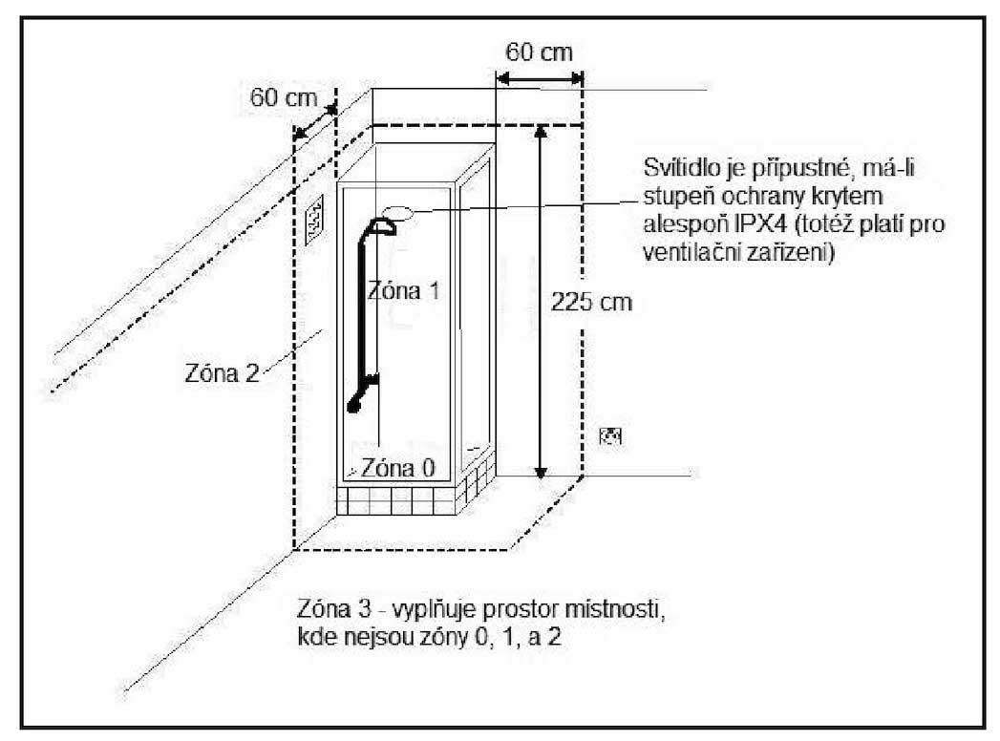

Koupelny a prostory se sprchou patří mezi prostory se zvýšeným rizikem úrazu elektrickým proudem – kombinuje se zde voda, mokrá pokožka (nízký odpor těla) a uzemněné kovové předměty. Proto norma ČSN 33 2000-7-701 ed. 2 tyto prostory rozděluje na zóny 0, 1 a 2 a pro každou stanovuje, jaká zařízení a jaké napětí jsou přípustné.
Prostory s vanou nebo sprchou se rozměrově dělí do zón vymezených normou. V reálném prostoru je pouhým okem rozeznatelná jen zóna 0 a částečně zóna 1 – výšku zóny 1 ani rozsah zóny 2 nelze určit bez měřidla. U prostor se sprchovou vaničkou jsou zóny totožné jako u prostor s vanou; sprcha bez vaničky se posuzuje odlišně.


V místnosti s vanou nebo sprchou musí být všechny obvody chráněny proudovým chráničem (RCD) s vybavovacím proudem do 30 mA. Výjimkou jsou obvody chráněné SELV / PELV a obvody s ochranou elektrickým oddělením.
Doplňující ochranné pospojování se provádí jen tehdy, je-li vana kovová. Plastové potrubí vodovodu i plastové topení se nepospojují; měděné trubky topení se pospojují přímo u zdroje tepla.
| Zóna | Přípustné napětí / zařízení |
|---|---|
| Zóna 0 | Pouze pevně připojené zařízení určené výrobcem pro zónu 0, chráněné SELV do 12 V AC / 30 V DC. Spínače a zásuvky 230/400 V nepřípustné. |
| Zóna 1 | Jen upevněná zařízení s pevným přívodem, výrobcem určená pro tuto zónu (čerpadla a kompresory vířivých van, ventilátory, sušiče ručníků, svítidla, ohřívače vody). Lze umístit odbočovací krabice pro zařízení v zónách 0 a 1 a zásuvky SELV/PELV (do 25 V AC / 60 V DC). |
| Zóna 2 | Příslušenství kromě zásuvek a vypínačů 230/400 V. Zásuvky napájené SELV/PELV jsou povoleny. |
| Mimo zóny | Spínače a zásuvky 230/400 V se umisťují mimo zóny 0–2; minimální výška spínacích přístrojů a zásuvek je 0,20 m. |
Pro podlahové vytápění lze použít pouze topné kabely nebo rohože s kovovým vodivým opletem (či páskem) připojeným k ochrannému vodiči. Ochranu elektrickým oddělením obvodů zde použít nelze.
Provedení instalace v umývacím prostoru řeší ČSN 33 2130 ed. 2. Spínače a zásuvky smí být jen vně umývacího prostoru. Jsou-li ve výšce alespoň 1,2 m nad podlahou, mohou být na jeho hranici; níže musí být nejbližší okraj 0,2 m od hranice prostoru.
Svítidlo musí mít spodní okraj minimálně ve výšce 1,8 m. Je-li níže než 2,5 m, musí být všechny jeho části z trvanlivého izolantu; níže než 1,8 m musí být chráněno proti mechanickému poškození a mít krytí IP X1. Spodní okraj svítidla nesmí být níže než 0,4 m nad dřezem/umyvadlem. Zásuvky ve školních učebnách se nesmí umisťovat blíže než 1,5 m od umývacího prostoru.
Tři zóny – zóna 0, 1 a 2. (Prostor se sprchou bez vaničky zónu 2 nemá – místo ní je zóna 1 vodorovně zvětšena na 1,20 m.)
V zóně 1 – jako upevněné zařízení s pevným elektrickým přívodem, výrobcem určené pro tuto zónu. Patří sem ohřívače vody, čerpadla, ventilátory či svítidla.
Pouze zařízení s pevným elektrickým připojením, výrobcem určené přímo pro zónu 0 a chráněné SELV do 12 V AC / 30 V DC. Spínače a zásuvky 230/400 V jsou v zóně 0 nepřípustné.